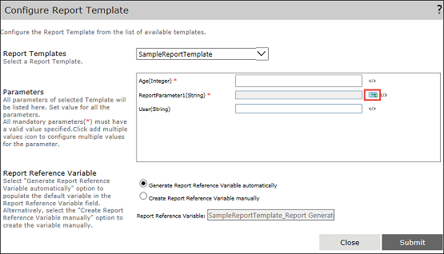

No
Configure Report Template
You can use the Configure Report Template properties to perform the following tasks:
- Select the required Report Template from the list of available report templates.
- Set the value for the parameters for the selected report template.
- Generate the report reference variable or create the report reference variable manually.
To open the Configure Report Template window, click the Configure Report Template edit button.
The Configure Report Template window has the following properties:
- Report Template: You can use this property to select the required report template from the list of available report templates. The available report templates are populated from the Report Template list.
- Parameters: You can use this property to set the values for the selected report template parameters. On selecting the required Report Template, the parameters defined for this particular report template appears. The user can type the value of the parameter in the respective parameter fields or use the expression editor to define the same.
- Report Reference Variable: You can use this property to generate a report reference variable. This default report reference variable is [Report_Template Name]_[activity Name]. You can automatically or manually generate this variable.
This variable will be used while attaching the report to a mail channel in various Human activities within the same workflow. - Generate Report Reference Variable automatically: When you select this option, you can generate the default variable in the Report Reference Variable field. You cannot edit the variable in the Report Reference Variable field.
- Create Report Reference Variable manually: When you select this option, you can change the name of the variable that is populated in the Report Reference Variable field. The default variable populated is same in both the options.
Multiple Value Parameter Configuration
You can configure multiple values for the parameters. To configure multiple values for a parameter, complete the following steps:
- In the Configure Report Template dialog box, select the template from the list of templates available in the Report Templates field.
- Click the multi-value icon as shown in the following image:

- The Multiple Value Parameter Configuration dialog box appears. The dialog box displays the parameter name and the data type of the parameter.
For example, the following image shows the parameter with the name ReportParameter1 of the type Integer:
- You can add multiple values to the parameter. To add multiple values, click Add... and then enter the values in each new row.
- Click Submit.
You can now see that the multiple values that you have entered appears as comma separated list in the ReportParameter1TestMultiValue field of the Configure Report Template dialog box as shown in the following image:

Note: To assign values to a date-time parameter, use a variable and assign a value to the variable, such as YYYY-MM-DDTHH:MM:SS.0000000. You cannot directly assign a hard coded date-time value from the expression editor.
Hidden Parameters Configuration
By default, you can see only the unhidden parameters in this section. You can check the Include Hidden Parameters option to view all the hidden parameters, as shown in the following image:
Among the parameters displayed here, the Time Zone ID and the TagName parameters have specific icons, Time Zone and Historian Tag, displayed against them. Users should note that it is a prerequisite to have a Historian Connection established before selecting a Time Zone or a Historian Tag. For more information on how to establish a Historian Connection, see Creating a Historian Connection.
Time Zone Configuration
If a report parameter name is the Time Zone ID, then the Time Zone icon is displayed for that particular parameter as shown in the following image:
On clicking the Time Zone icon, the Time Zone dialog box appears. Here, you can select the required Historian Connection.When you select a connection, different time zones are populated in the Time Zone drop-down list. You can select an appropriate time zone and click Select.
Historian Tag Configuration
If a report parameter name is TagName, then the Historian Tag icon is displayed for that particular parameter as shown in the following image:
On clicking the Historian Tag icon, the Historian Tags dialog box appears. Here, you can select the required Historian Connection. When you select a connection, all the Historian tags are displayed on the left-hand side list box of Select Tag(s) section.
Select the required tags, click the > button to move the tags to the right-hand side of the Select Tag(s) section, and click Select. If you want to remove any tag from the right-hand side list box, then you must select the tag(s) and click the < button. The tag will be placed on the left-hand side list box.